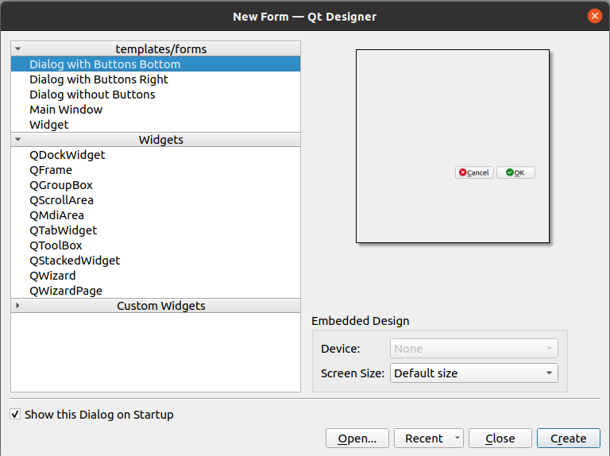

Créer une extension QGIS avec une interface graphique#
Pour faire ce chapitre, il faut d'abord avoir une extension de base, à l'aide du chapitre précédent.
QtDesigner#
Créons un fichier QtDesigner comme-ceci :

et y ajouter des "widgets" :

Astuces#
-
Ouvrir la page des "slots/signaux" depuis la barre d'outils et supprimer ceux qui existent.
-
Faire un clic droit sur "QDialog" à droite et faire une mise en page "vertical".
Tip
Ne pas changer la propriété objectName pour le moment.
On peut télécharger la solution si besoin.
La classe qui accompagne#
Créons un fichier dialog.py avec le contenu suivant :
1 2 3 4 5 6 7 8 9 10 11 12 13 14 15 16 | |
Modifions la méthode la méthode run du fichier __init__.py en
1 2 3 4 | |
Relançons l'extension à l'aide du "plugin reloader" et cliquons sur le bouton.
Les signaux et les slots#
Connectons le signal clicked du bouton "Annuler" dans le constructeur __init__ :
1 | |
On dit que clicked est un signal, auquel on connecte le slot close.
Connectons-le signal clicked du bouton "Accepter" à notre propre slot (qui est une fonction) :
1 | |
et ajoutons notre propre fonction click_ok pour quitter la fenêtre et en affichant la saisie de
l'utilisateur dans la QgsMessageBar de QGIS.
Le widget de saisie est un QLineEdit : https://doc.qt.io/qt-5/qlineedit.html
1 2 3 | |
Faire le test dans QGIS avec une saisie de l'utilisateur et fermer la fenêtre.
Continuons en rendant en lecture seule le gros bloc de texte et affichons à l'intérieur la description de la la couche qui est sélectionnée dans le menu déroulant.
Documentation :
- QPlainTextEdit : https://doc.qt.io/qt-5/qplaintextedit.html
- QgsMapLayerComboBox : https://qgis.org/api/classQgsMapLayerComboBox.html
Dans le __init__ :
1 2 | |
Et la nouvelle fonction qui va se charger de mettre à jour le texte :
1 2 3 4 5 6 7 | |
On peut donc désormais cumuler l'ensemble des chapitres précédents pour lancer des algorithmes, manipuler les données, etc.
Bonus
Ajouter un nouveau bouton pour ouvrir une fenêtre d'un dialogue Processing 🚀
Solution#
Afficher
1 2 3 4 5 6 7 8 9 10 11 12 13 14 15 16 17 18 19 20 21 22 23 24 25 26 27 28 29 30 31 32 33 34 35 36 37 | |
Organisation du code#
Il ne faut pas hésiter à créer des fichiers afin de séparer le code.
On peut aussi créer des dossiers afin d'y mettre plusieurs fichiers Pythons. Un dossier en Python se nomme un
module. Pour faire un module compatible, il faut ajouter un fichier __init__.py même s’il n'y a rien
dedans.
Warning
Il ne faut vraiment pas oublier le fichier __init__.py. Cela peut empêcher Python de fonctionner
correctement. Un bon IDE peut signaler ce genre d'erreur.
Dans l'exemple ci-dessus, on peut diviser le code du fichier __init__.py :
1 2 3 | |
En faisant un couper/coller, enlever la classe MinimalPlugin du fichier __init__.py.
Tip
On essaie souvent d'avoir une classe par fichier en Python.
Créer un fichier plugin.py et ajouter le contenu en collant. Il est bien de vérifier les imports dans les
deux fichiers.